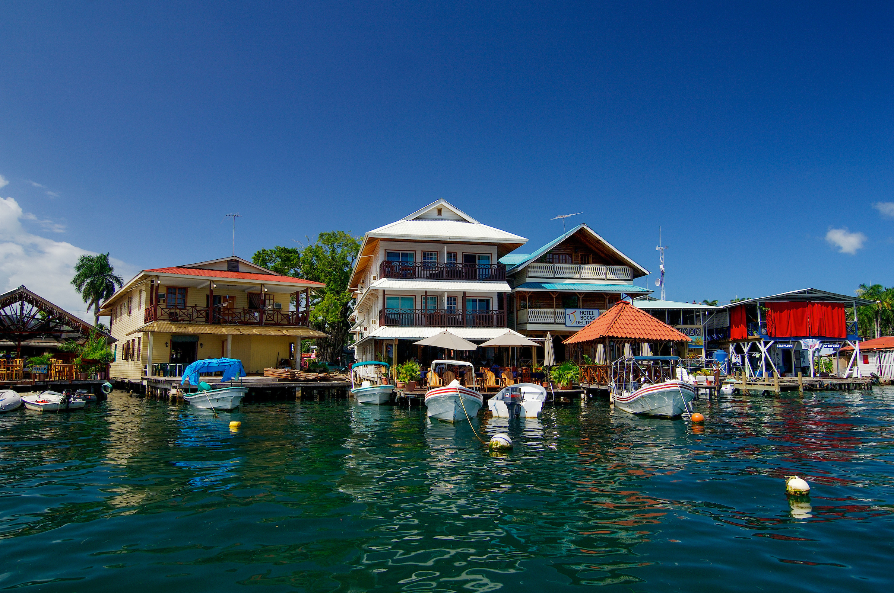
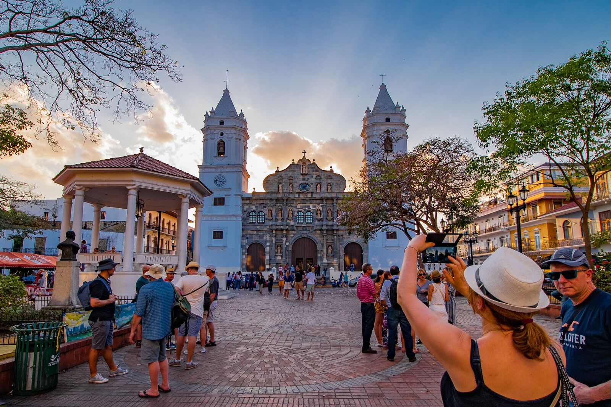
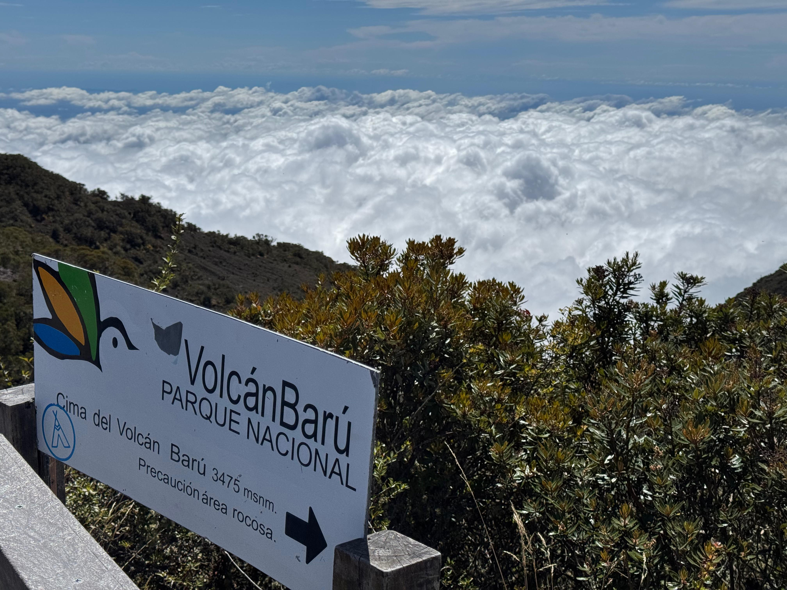
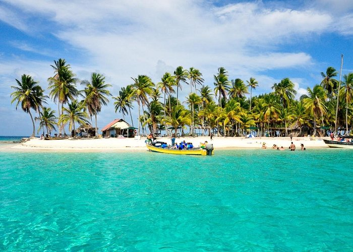
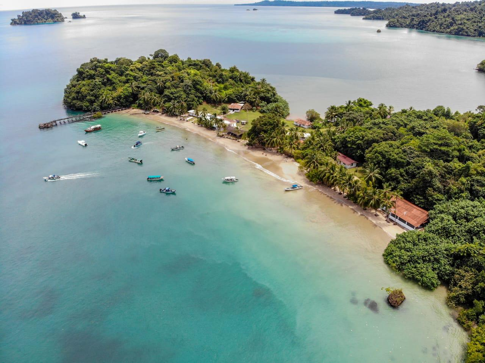

Canal de Panamá
Una de las maravillas de la ingeniería moderna, que conecta el Océano Atlántico con el Pacífico. Es un punto histórico y económico de gran relevancia mundial.

Bocas del Toro
Conjunto de islas en el Caribe panameño, famosas por sus playas paradisíacas, arrecifes de coral y cultura afrocaribeña.
Casco Antiguo
El centro histórico de la Ciudad de Panamá, declarado Patrimonio de la Humanidad por la UNESCO. Destaca por su arquitectura colonial, plazas y vida cultural.
Volcán Barú
El punto más alto del país, ubicado en la provincia de Chiriquí. Desde su cima es posible observar, en un día despejado, tanto el océano Pacífico como el Atlántico.
Archipiélago de San Blas
Más de 350 islas habitadas por la comunidad indígena Guna Yala. Son famosas por su belleza natural, aguas cristalinas y cultura tradicional.
Isla Coiba
Un paraíso natural en el Pacífico panameño, declarado Patrimonio de la Humanidad por la UNESCO. Ideal para ecoturismo, buceo y observación de fauna marina.
